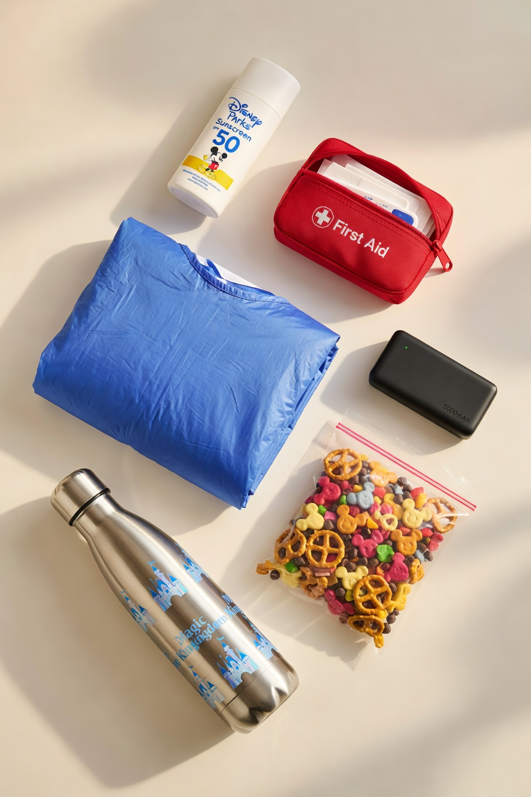
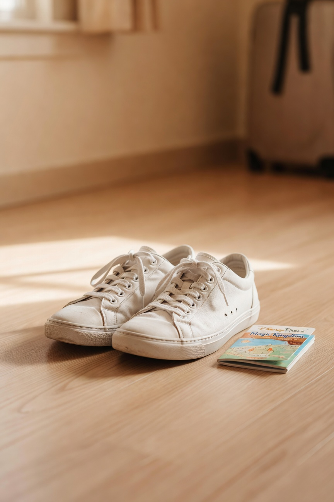
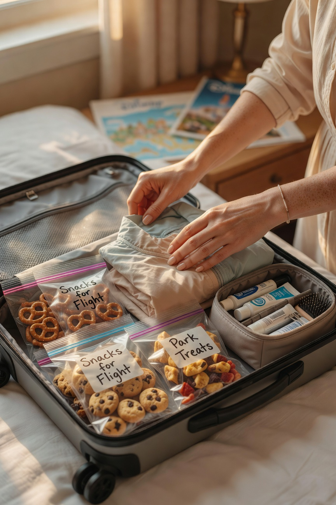
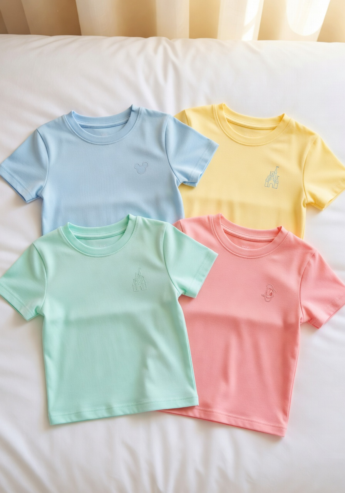

We are a Disney family. This is not a casual statement. We have been multiple times, we plan trips the way some people plan weddings, and I have opinions about Disney packing that I have earned through actual experience -- including the time we forgot sunscreen entirely and the time P decided to wear brand new shoes on day one and we spent an afternoon finding blister bandages inside the park. Lessons were learned.
I am the packer in this family. I have a list. It has been refined over many trips. I am sharing it here because I get asked about Disney prep constantly.
The Non-Negotiables

Sunscreen. Bring it from home. The sunscreen sold inside Disney parks is wildly overpriced and you will use more than you think. We bring a full-size bottle per person per day in a Florida summer and I have never once thought we brought too much.
A small day bag or backpack for each person. Not huge -- just enough for water bottle, sunscreen for reapplication, a light layer for when you go inside and freeze, a portable phone charger, and snacks. Everyone carries their own. This is the system and it works.
A portable phone charger. Your phone will die faster than you expect. Having a fully charged backup in your bag is not optional.
The Shoes

Comfortable shoes that have been fully broken in. This cannot be stressed enough. P's blister incident remains a cautionary tale I revisit every single trip. Whatever shoes you are bringing, wear them every day for a week before you go. Disney is a walking trip and your feet will log serious miles.
The Things That Actually Make the Trip Better

A small first aid kit with blister bandages specifically. Also ibuprofen, because theme parks are physically demanding and you will feel it by day two.
Ponchos. Compact and inexpensive when you buy them ahead of time, extremely not inexpensive when you buy them inside the park in a downpour. Florida will rain at some point, usually in the afternoon. Plan accordingly.
Snacks from home. We pack snacks every day and bring them in. Disney allows outside food and this saves real money over a multi-day trip. A small soft cooler in a day bag works perfectly.
Matching Family Shirts

Matching family shirts. We do this. The teenagers have accepted it. We get ours made or bought in advance and they always turn out great. Everyone looks good in photos and nobody paid park prices for a shirt.
What We Have Stopped Bringing
Autograph books. We did these when the kids were small. They have outgrown it and the character meet and greet time is better used for photos now.
Too much anything. I used to overpack out of anxiety. A lighter bag means faster movement and shoulders that still work at the end of day three. Less is genuinely more.
The Money Saving Philosophy
Disney is expensive. The tickets are expensive. The hotels are expensive. The food inside is expensive. You cannot control most of that. What you can control is what you bring from home -- and buying those things ahead of time means you are not paying premium prices for things that cost a fraction of that everywhere else.
We spend real money on the experience and save everywhere we reasonably can on the supplies. That is the Disney budget approach in this house and it has served us well for many trips.
We have a trip in the works right now and I am already making spreadsheets. More Disney content is coming.
-- Christin Marie